A titkosítás az egyik legfontosabb védelmi réteg, amely megakadályozza, hogy illetéktelenek hozzáférjenek az eszközön tárolt adatokhoz.
A modern eszközökön rengeteg érzékeny információ található: dokumentumok, fényképek, jelszavak, böngészési előzmények,
e-mail fiókok, banki alkalmazások adatai. Ezek mind veszélybe kerülhetnek, ha az eszköz elveszik vagy ellopják.
Miért kritikus a titkosítás hiánya?
Fizikai hozzáférés = teljes hozzáférés titkosítás nélkül. Egy támadó egyszerűen kiveheti a merevlemezt és kiolvashatja.
A képernyőzár nem elég. A PIN vagy jelszó csak a rendszerbe való belépést védi, a háttértárat nem.
GDPR és adatvédelmi követelmények. Céges eszközök esetén a titkosítás hiánya súlyos jogi következményekkel járhat.
Személyes adatok védelme. Fotók, üzenetek, jelszavak, banki adatok kerülhetnek illetéktelen kezekbe.
Titkosítás nélkül az eszköz elvesztése adatlopást jelenthet. Titkosítással az adatok nagy valószínűséggel biztonságban maradnak.
Ellopott laptop mentett jelszavakkal → teljes digitális identitásvesztés.
Elhagyott telefon titkosítás nélkül → fotók, üzenetek, banki appok hozzáférhetőek.
BitLocker – részletes útmutató
A BitLocker a Windows beépített meghajtótitkosító megoldása, amely a teljes háttértárat védi. A titkosítás a háttérben fut,
a felhasználó számára észrevétlen, és a rendszer teljesítményét csak minimálisan befolyásolja.
Hogyan működik a BitLocker?
A BitLocker AES-alapú titkosítást használ, és a kulcsot a TPM chipben tárolja (ha van ilyen a gépben). A TPM ellenőrzi,
hogy a rendszerindítás során nem történt-e módosítás (pl. bootloader csere). Ha minden rendben, kiadja a kulcsot,
és a Windows automatikusan feloldja a meghajtót.
Mikor kér jelszót?
Ha a TPM gyanús változást észlel.
Ha a rendszergazda úgy állítja be, hogy minden indításkor kérjen PIN-t.
Ha a meghajtót másik gépbe helyezik.
BitLocker bekapcsolása – lépésről lépésre
1. BitLocker bekapcsolása
Nyisd meg a Vezérlőpult → Rendszer és biztonság → BitLocker meghajtótitkosítás menüt.
Válaszd ki a titkosítani kívánt meghajtót, majd kattints a „BitLocker bekapcsolása” gombra.
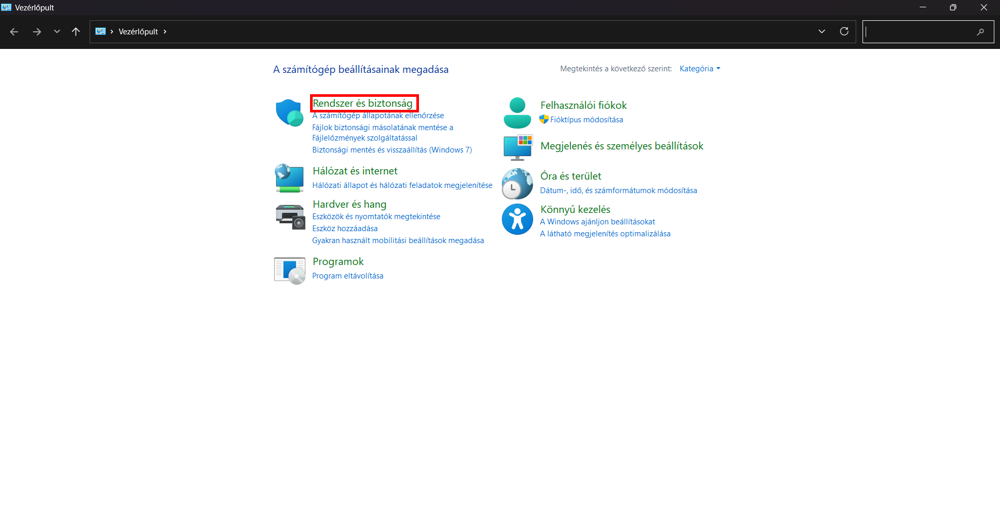
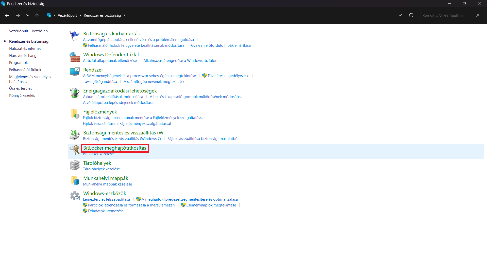
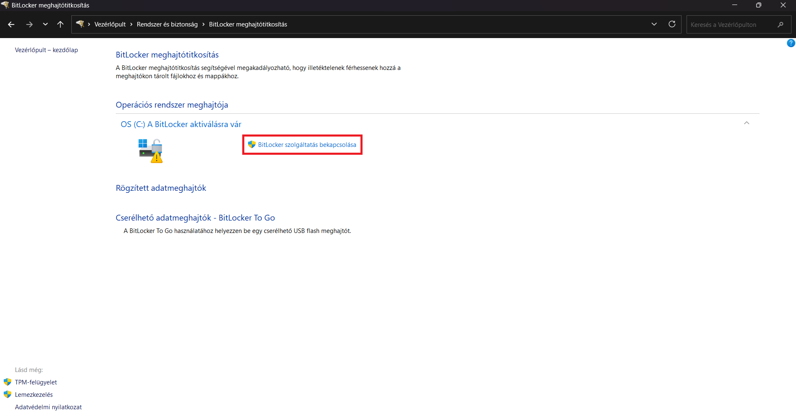
2. Feloldási mód kiválasztása
Választható:
Jelszóval feloldás
TPM + PIN (vállalati környezetben)
3. Helyreállítási kulcs mentése
A helyreállítási kulcsot mindenképp mentsd el biztonságos helyre (Microsoft-fiók, USB, nyomtatás).
Ez a kulcs szükséges, ha a rendszer nem tudja automatikusan feloldani a meghajtót.
4. Titkosítási mód kiválasztása
Csak a használt terület titkosítása – gyorsabb
Teljes meghajtó titkosítása – biztonságosabb
Majd a titkosítás indítása gombra kattintav elindítja.
VeraCrypt – nyílt forráskódú alternatíva
A VeraCrypt a TrueCrypt továbbfejlesztett változata, amelyet a biztonsági közösség széles körben használ.
Nyílt forráskódú, így bárki ellenőrizheti a működését, és nincs benne hátsó ajtó.
Miért választják sokan a VeraCryptet?
Nyílt forráskódú, átlátható.
Windows, Linux és macOS rendszereken is működik.
Konténereket, partíciókat és teljes meghajtókat is képes titkosítani.
Rejtett kötet funkcióval rendelkezik.
Rejtett kötet – miért hasznos?
A rejtett kötet egy másik titkosított kötetben helyezkedik el. Ha valakit kényszerítenek a jelszó kiadására,
a külső kötet jelszava megadható, miközben a belső kötet továbbra is rejtve marad.
VeraCrypt konténer létrehozása – lépésről lépésre
1. Új kötet létrehozása
Indítsd el a VeraCryptet, majd kattints a Create Volume gombra.
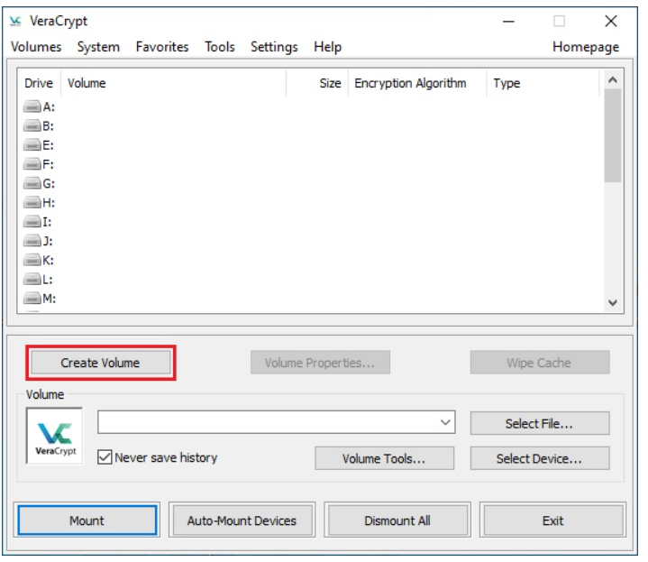
Válaszd a Create an encrypted file container opciót.
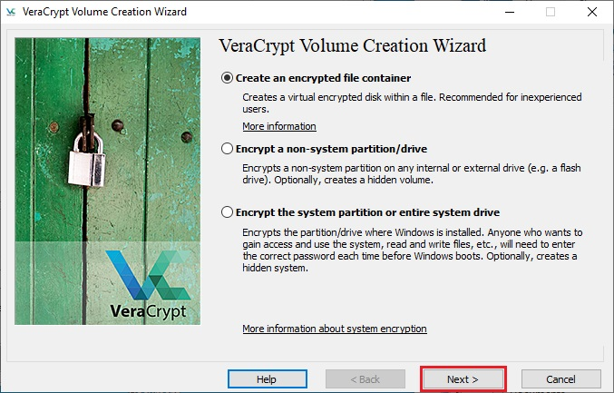
Ebben a lépésben ki kell választania, hogy szabványos vagy rejtett VeraCrypt kötetet szeretne létrehozni. Ebben az oktatóanyagban az előbbi lehetőséget választjuk, és egy szabványos VeraCrypt kötetet hozunk létre.Mivel ez a lehetőség alapértelmezés szerint ki van választva, egyszerűen kattintson a Tovább gombra.
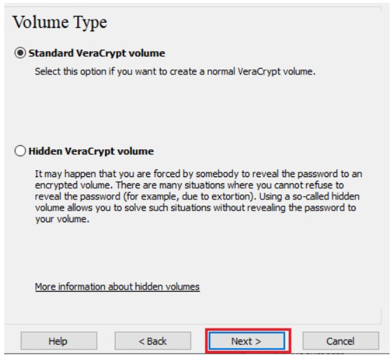
Ebben a lépésben meg kell adnia, hogy hová szeretné létrehozni a VeraCrypt kötetet (fájltárolót). Fontos megjegyezni, hogy a VeraCrypt konténer ugyanolyan, mint bármelyik normál fájl. Például áthelyezhető vagy törölhető, mint bármely normál fájl. Szüksége van egy fájlnévre is, amelyet a következő lépésben fog kiválasztani. Kattintson a Fájl kiválasztása gombra.
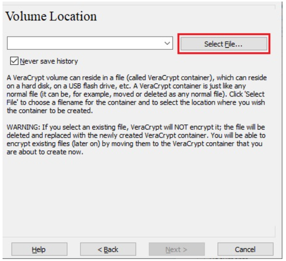
Válassza ki a kívánt elérési utat (ahol a konténert létre szeretné hozni) a fájlválasztóban. Írja be a kívánt konténerfájl nevét a Fájlnév mezőbe.Kattintson a Mentés gombra.
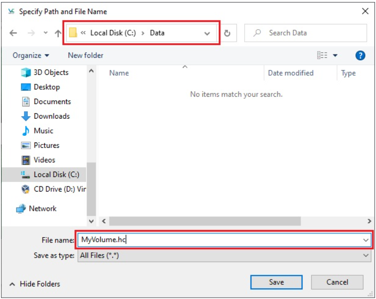
A Kötet létrehozása varázsló ablakában kattintson a Továbbgombra.
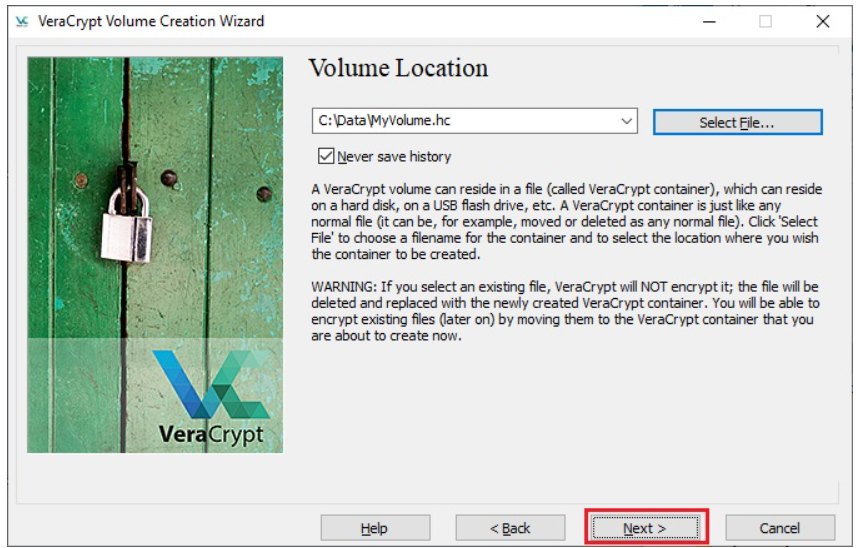
Itt kiválaszthatja a kötet titkosítási algoritmusát és hash algoritmusát. Ha nem biztos benne, hogy mit válasszon, használhatja az alapértelmezett beállításokat, és kattintson a Tovább gombra.
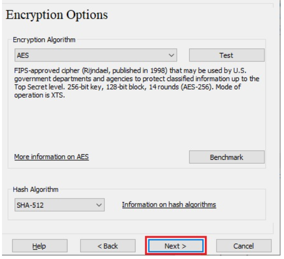
Itt azt adjuk meg, hogy a VeraCrypt konténerünk méretének 250 megabájtot szeretnénk. Természetesen ettől eltérő méretet is megadhat. Miután beírta a kívánt méretet a beviteli mezőbe (piros téglalappal jelölve), kattintson a Tovább gombra.
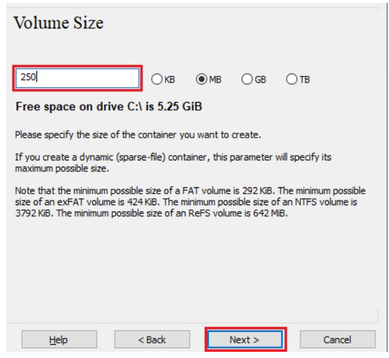
Ez az egyik legfontosabb lépés. Itt kell kiválasztania egy jó kötetjelszót. Olvassa el figyelmesen a varázsló ablakában megjelenő információkat arról, hogy mi számít jó jelszónak.
Miután kiválasztott egy jó jelszót, írja be azt az első beviteli mezőbe. Ezután írja be újra az első alatti beviteli mezőbe, és kattintson a Tovább gombra.
Megjegyzés: A Tovább gomb mindaddig letiltásra kerül, amíg a jelszó mindkét beviteli mezőben meg nem egyezik.
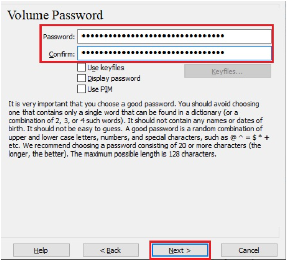
Mozgassa az egérmutatót a lehető legvéletlenszerűbben a Kötet létrehozása varázsló ablakában legalább addig, amíg a véletlenszerűség jelzője zöldre nem vált.
Minél tovább mozgatja az egeret, annál jobb (legalább 30 másodpercig ajánlott mozgatni az egeret).
Ez jelentősen növeli a titkosítási kulcsok titkosítási erősségét (ami növeli a biztonságot).
Kattintson a Formázás gombra.
El kell kezdenie a kötet létrehozását. A VeraCrypt most létrehoz egy MyVolume.hc nevű fájlt az F:\Data\ mappában (ahogy a 6. lépésben megadtuk).
Ez a fájl egy VeraCrypt konténer lesz (a titkosított VeraCrypt kötetet fogja tartalmazni). A kötet méretétől függően a kötet létrehozása eltarthat egy ideig.
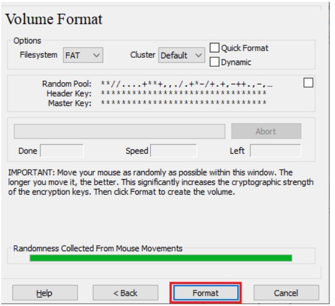
A befejezés után a következő párbeszédpanel jelenik meg:
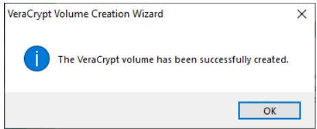
Sikeresen létrehoztunk egy VeraCrypt kötetet (fájltárolót). A VeraCrypt kötetlétrehozó varázsló ablakában kattintson a Kilépés gombra.
A varázsló ablakának el kell tűnnie.
A fennmaradó lépésekben felcsatoljuk az imént létrehozott kötetet.
Visszatérünk a fő VeraCrypt ablakba (amelynek továbbra is nyitva kell lennie, de ha nem, ismételje meg az 1. lépést a VeraCrypt elindításához, majd folytassa a 13. lépéstől.)
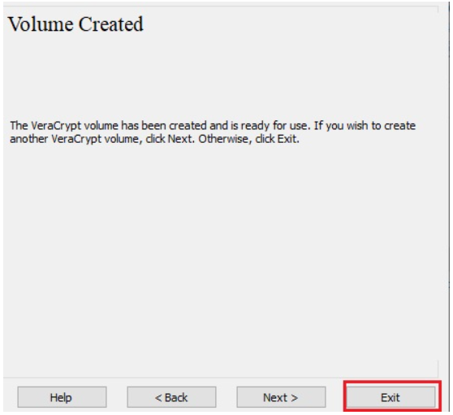
Válasszon egy meghajtóbetűjelet a listából (piros téglalappal jelölve). Ez lesz az a meghajtóbetűjel, amelyhez a VeraCrypt konténer csatolásra kerül.
Megjegyzés: Ebben az oktatóanyagban az M meghajtóbetűjelet választottuk, de természetesen választhat bármely más elérhető meghajtóbetűjelet is.
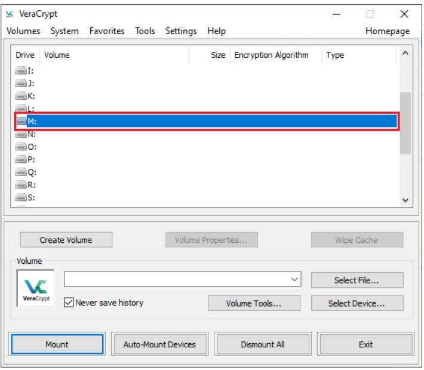
Kattintson a Fájl kiválasztása gombra.
Megjelenik a szokásos fájlválasztó ablak.
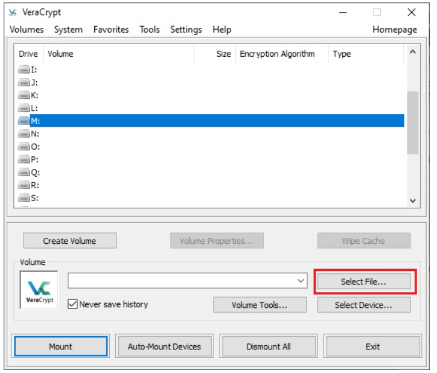
A fájlválasztóban keresse meg a konténerfájlt (amelyet a 6-12. lépésekben hoztunk létre), és jelölje ki. Kattintson a Megnyitás gombra (a fájlválasztó ablakban).
A fájlválasztó ablaknak el kell tűnnie.
A következő lépésekben visszatérünk a VeraCrypt főablakába.
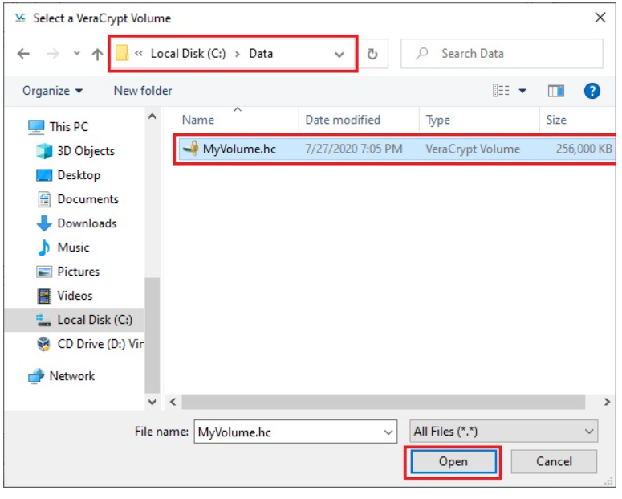
A VeraCrypt főablakában kattintson a Csatlakoztatás gombra. Megjelenik a jelszót kérő párbeszédablak.
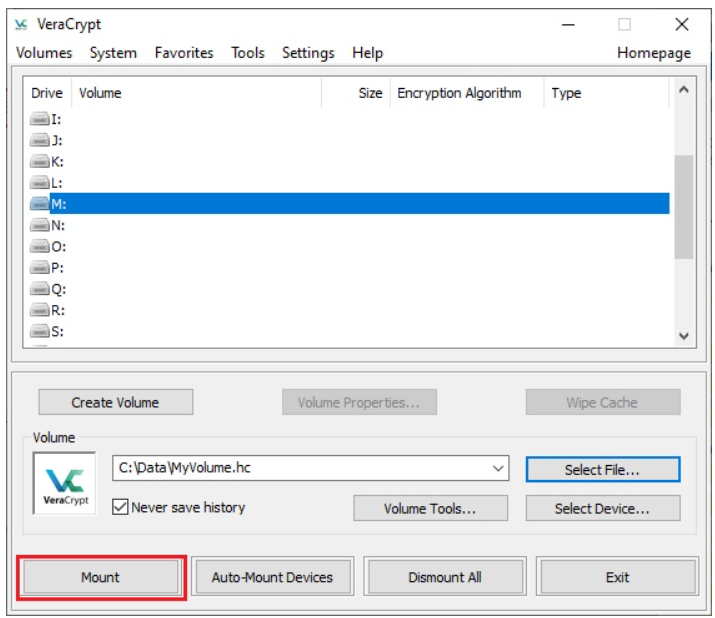
Írja be a jelszót (amelyet a 10. lépésben adott meg) a jelszóbeviteli mezőbe (piros téglalappal jelölve).
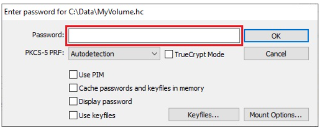
Válassza ki a kötet létrehozásakor használt PRF algoritmust (az SHA-512 a VeraCrypt által használt alapértelmezett PRF). Ha nem emlékszik, melyik PRF-et használta, hagyja „automatikus észlelés” értékre állítva, de a csatolási folyamat több időt vesz igénybe. A jelszó megadása után kattintson az OK gombra.
A VeraCrypt most megpróbálja csatolni a kötetet. Ha a jelszó helytelen (például, ha helytelenül írta be), a VeraCrypt értesíti Önt, és meg kell ismételnie az előző lépést (írja be újra a jelszót, és kattintson az OK gombra). Ha a jelszó helyes, a kötet csatolásra kerül.
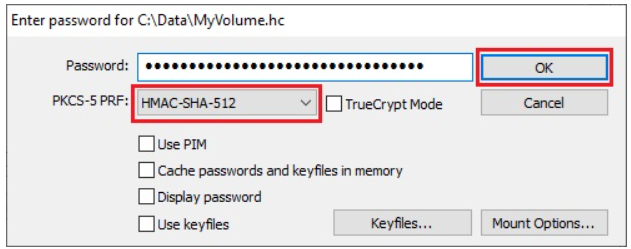
Sikeresen csatoltuk a konténert virtuális M lemezként:
A virtuális lemez teljes mértékben titkosított (beleértve a fájlneveket, az foglalási táblázatokat, a szabad területet stb.), és úgy viselkedik, mint egy valódi lemez. Menthet (vagy másolhat, áthelyezhet stb.) fájlokat erre a virtuális lemezre, és azok menet közben titkosítva lesznek írás közben.
Ha például megnyit egy VeraCrypt köteten tárolt fájlt a médialejátszóban, a fájl automatikusan visszafejtésre kerül RAM-ba (memóriába) olvasás közben.
Fontos: Vegye figyelembe, hogy amikor megnyit egy VeraCrypt köteten tárolt fájlt (vagy amikor fájlt ír/másol a VeraCrypt kötetre/kötetről), nem kell újra megadnia a jelszót. A helyes jelszót csak a kötet csatolásakor kell megadnia.
A csatolt kötetet megnyithatja például úgy, hogy kiválasztja a listából, ahogy a fenti képernyőképen látható (kék kijelölés), majd duplán rákattint a kiválasztott elemre.
A csatlakoztatott kötetet ugyanúgy keresheti meg, mint bármely más típusú kötetet. Például a „Számítógép” (vagy a „Sajátgép”) lista megnyitásával és a megfelelő meghajtóbetűjelre (ebben az esetben az M betűre) duplán kattintva.
2. Titkosítási algoritmus
Alapértelmezett: AES – gyors és biztonságos.
3. Jelszó beállítása
Legyen hosszú, egyedi, ne tartalmazzon szótárszavakat.
4. Konténer csatolása
A létrehozott konténer egy virtuális meghajtóként jelenik meg.
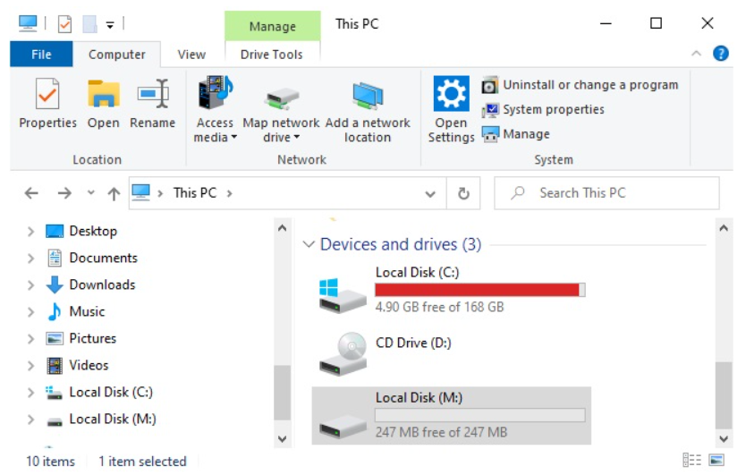
BitLocker vs. VeraCrypt – összehasonlítás
Tulajdonság
BitLocker
VeraCrypt
Platform
Windows
Windows, Linux, macOS
Licenc
Zárt, Microsoft
Nyílt forráskódú, ingyenes
Használat
Teljes meghajtó
Konténer, partíció, teljes meghajtó
TPM támogatás
Igen
Nincs
Rejtett kötet
Nincs
Van
Mobil eszközök titkosítása
Android
A modern Android rendszerek automatikusan titkosítják a tárhelyet, ha a felhasználó PIN-t, jelszót vagy biometrikus
azonosítást állít be. A titkosítás típusa:
FDE (Full Disk Encryption) – régebbi készülékeknél
FBE (File-Based Encryption) – újabb készülékeknél, gyorsabb és biztonságosabb
iOS
Az Apple készülékek hardveres titkosítást használnak. A Secure Enclave chip tárolja a kulcsokat.
A jelkód hossza közvetlenül befolyásolja a titkosítás erősségét.
A titkosítás erőssége nagyban függ a jelkód hosszától és bonyolultságától.
Mit tegyünk, ha elveszett az eszköz?
1. Azonnali teendők
Jelszavak azonnali cseréje (e-mail, bank, közösségi média).
Bejelentkezett eszközök kijelentkeztetése (Google, Microsoft, Apple ID).
Távoli zárolás vagy törlés bekapcsolása (Find My Device / Find My iPhone).
Banki appok értesítése.
2. Munkahelyi eszköz esetén
Azonnal értesíteni kell az IT-t.
Távoli törlés (MDM) aktiválása.
3. Ha az eszköz titkosítva volt
Ha az eszköz titkosítva volt, az adatok nagy valószínűséggel biztonságban maradtak.
Tudáspróba – Teszteld a tudásod!
Válaszolj a kérdésekre, majd lépj tovább a következőre.